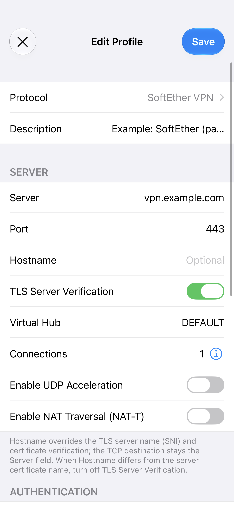
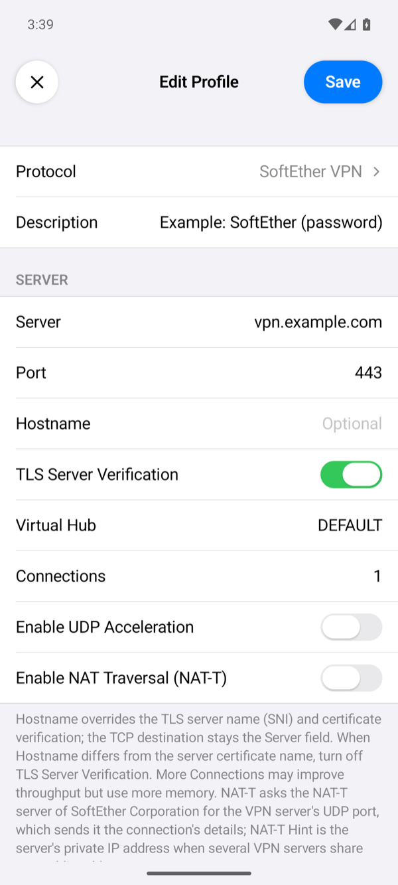

SoftEther VPN Server
This page builds SoftEther VPN Server 4.44 on Ubuntu and sets it up from the command line for the app's SoftEther profiles: a Virtual Hub with SecureNAT, users for every login method the app offers, a trusted certificate, and the server side of UDP acceleration and NAT traversal. Its last part sets up the profile in the app, on iPhone and on Android.
We ran these commands on a freshly installed test server, Ubuntu 24.04 with 2 vCPUs and 4 GB of memory, on 7 November 2026, and every setting below was read back from it with vpncmd. The phones' results named on this page come from the runs listed in Test results.
What you need
- An Ubuntu server with a public IPv4 address.
- A DNS name for it, such as
vpn.example.com, for the certificate. - TCP port 443 open (or 992 or 5555, which SoftEther also listens on), and TCP port 80 while Let's Encrypt issues and renews the certificate.
- For UDP acceleration and NAT traversal, incoming UDP to the server: SoftEther picks its UDP ports itself. Our server's firewall lets all incoming UDP through.
1. Build SoftEther VPN Server 4.44
apt-get install -y build-essential libreadline-dev libssl-dev zlib1g-dev libncurses-dev git
git clone --depth 1 --branch v4.44-9807-rtm https://github.com/SoftEtherVPN/SoftEtherVPN_Stable.git /opt/softether-stable-src
cd /opt/softether-stable-src
./configure
make
cp -a bin/vpnserver /opt/vpnserver
cp bin/vpncmd/vpncmd /opt/vpnserver/The tag v4.44-9807-rtm is SoftEther's 4.44 Stable release, the newest Stable release on 7 November 2026. make leaves the server program and its data file hamcore.se2 in bin/vpnserver, and the command-line tool in bin/vpncmd; the last two commands put both in /opt/vpnserver. On our fresh server the build ended without errors.
2. Run it as a service
[Unit]
Description=SoftEther VPN Server 4.44 Stable
After=network-online.target
Wants=network-online.target
[Service]
Type=forking
ExecStart=/opt/vpnserver/vpnserver start
ExecStop=/opt/vpnserver/vpnserver stop
Restart=on-failure
[Install]
WantedBy=multi-user.targetsystemctl daemon-reload
systemctl enable --now softether4The server listens on TCP 443, 992, 1194 and 5555. The app's SoftEther profiles connected on 443, 992 and 5555.
3. Set the administrator password
All further settings are made with vpncmd. A fresh server has no administrator password; set one at once:
/opt/vpnserver/vpncmd localhost /SERVER /CMD ServerPasswordSetFrom then on, add /PASSWORD:<ADMIN_PASSWORD> after /SERVER, or let vpncmd ask for it. The commands below are typed at its VPN Server> prompt, which vpncmd localhost /SERVER opens.
4. Certificate
With TLS Server Verification on, the app's default, the server needs a certificate the phone trusts for the name in the profile. Our server gets one from Let's Encrypt with certbot in standalone mode, as an RSA 2048-bit key, and loads it into SoftEther, which keeps its own copy:
apt-get install -y certbot
certbot certonly --standalone --key-type rsa --rsa-key-size 2048 -d <SERVER_HOST>ServerCertSet /LOADCERT:/etc/letsencrypt/live/<SERVER_HOST>/fullchain.pem /LOADKEY:/etc/letsencrypt/live/<SERVER_HOST>/privkey.pemCertbot renews the certificate by itself. This deploy hook loads each renewed one into SoftEther; it reads the administrator password from /root/.softether-admin, a file only root can read:
#!/bin/sh
# SoftEther keeps its own copy of the server certificate in vpn_server.config, so load the renewed one.
set -e
live=/etc/letsencrypt/live/<SERVER_HOST>
umask 077
printf "ServerCertSet /LOADCERT:%s/fullchain.pem /LOADKEY:%s/privkey.pem\n" "$live" "$live" > /root/srp-cert-in.txt
timeout 60 /opt/vpnserver/vpncmd localhost /SERVER "/PASSWORD:$(cat /root/.softether-admin)" /IN:/root/srp-cert-in.txt < /dev/null > /root/srp-cert.log 2>&1
rm -f /root/srp-cert-in.txtchmod 700 /etc/letsencrypt/renewal-hooks/deploy/softether.shOur server negotiates TLS 1.3 with the app on both phones (TLS_AES_256_GCM_SHA384 in SessionGet).
5. Turn off what the app does not need
KeepDisable
VpnAzureSetEnable noThe first stops the keep-alive packets to SoftEther's servers, the second the VPN Azure relay. Neither is used by the app.
6. Virtual Hub and the way out
A new server has the Virtual Hub DEFAULT; the app's Virtual Hub field defaults to that name. Another hub is one command, and each hub needs a way for its clients to reach the internet. Ours use SecureNAT, SoftEther's built-in DHCP and NAT:
Hub DEFAULT
SecureNatEnable
HubCreate TEST-HUB /PASSWORD:<HUB_ADMIN_PASSWORD>
Hub TEST-HUB
SecureNatEnableSecureNAT gives the phone an address from 192.168.30.10 on with the gateway and DNS server 192.168.30.1. Once it runs, SecureNatStatusGet shows Kernel-mode NAT is Active | Yes: SoftEther then forwards the clients' traffic in the kernel. Profiles with Virtual Hub set to TEST-HUB connected to the second hub.
The SoftEther page of the SSTP section describes the other way out, a Local Bridge with Linux NAT.
7. Users for each login method
The app's Method picks how it logs in. Each method needs a user of the matching kind in the hub:
| App method | User on the server |
|---|---|
| Standard Password | Password authentication |
| RADIUS / NT Domain | RADIUS authentication (or NT Domain authentication, which only SoftEther on Windows offers; we tested RADIUS) |
| Certificate | Signed certificate authentication or individual certificate authentication |
| Anonymous | Anonymous authentication |
A user of another kind is refused with the app's authentication message, for example a RADIUS user with Standard Password, or a password user with Anonymous.
Standard password
Hub DEFAULT
UserCreate vpnuser /GROUP:none /REALNAME:none /NOTE:none
UserPasswordSet vpnuser /PASSWORD:<PASSWORD>Anonymous
Hub DEFAULT
UserCreate guest /GROUP:none /REALNAME:none /NOTE:none
UserAnonymousSet guestIn the app, Method Anonymous with the user's name in Username; there is no password.
RADIUS
Our server checks RADIUS users with FreeRADIUS on the same host, listening only on the loopback address:
apt-get install -y freeradius freeradius-utilsIn /etc/freeradius/3.0/clients.conf, set the secret of client localhost to a long random value, <RADIUS_SECRET>. In /etc/freeradius/3.0/sites-available/default, change every ipaddr = * to ipaddr = 127.0.0.1 and every ipv6addr = :: to ipv6addr = ::1 in its listen sections, so FreeRADIUS answers only on this host: ss -lnup then shows ports 1812 and 1813 on 127.0.0.1 and ::1 only. Then add the user at the top of /etc/freeradius/3.0/mods-config/files/authorize:
radiususer Cleartext-Password := "<RADIUS_USER_PASSWORD>"systemctl restart freeradius
radtest radiususer '<RADIUS_USER_PASSWORD>' 127.0.0.1 0 '<RADIUS_SECRET>'radtest answers Received Access-Accept. Then point the hub at it and add the user, whose password stays in FreeRADIUS:
Hub DEFAULT
RadiusServerSet 127.0.0.1:1812 /SECRET:<RADIUS_SECRET> /RETRY_INTERVAL:500
UserCreate radiususer /GROUP:none /REALNAME:none /NOTE:none
UserRadiusSet radiususer /ALIAS:noneVersion 4.44 takes the port as part of the address. In the app, Method RADIUS / NT Domain sends the password to the server inside TLS, and the server asks FreeRADIUS.
Certificates
Certificate login needs a client certificate with its private key in a .p12 file for the phone. This makes a small certificate authority and two client certificates with OpenSSL, on any computer, one for each kind of certificate user below. The last command writes each .p12 with the encryption that the iPhone and Android both import:
openssl req -x509 -newkey rsa:2048 -nodes -keyout ca.key -out ca.crt -days 3650 -subj "/CN=Example VPN CA" \
-addext "basicConstraints=critical,CA:TRUE" -addext "keyUsage=critical,keyCertSign,cRLSign"
printf 'basicConstraints=CA:FALSE\nkeyUsage=critical,digitalSignature,keyEncipherment\nextendedKeyUsage=clientAuth\n' > client.ext
for user in certuser certuser2; do
openssl req -newkey rsa:2048 -nodes -keyout $user.key -out $user.csr -subj "/CN=$user"
openssl x509 -req -in $user.csr -CA ca.crt -CAkey ca.key -CAcreateserial -out $user.crt -days 1825 -extfile client.ext
openssl pkcs12 -export -inkey $user.key -in $user.crt -certfile ca.crt -name $user -out $user.p12 \
-keypbe PBE-SHA1-3DES -certpbe PBE-SHA1-3DES -macalg sha1
doneSoftEther has two kinds of certificate users. Copy ca.crt and certuser2.crt to the server first. On the phone, import the user's .p12: certuser.p12 for the first user below, certuser2.p12 for the second.
Signed certificate: the hub trusts the certificate authority, and any certificate it signed with the right common name logs in as the user.
Hub DEFAULT
CAAdd ca.crt
UserCreate certuser /GROUP:none /REALNAME:none /NOTE:none
UserSignedSet certuser /CN:certuser /SERIAL:nonevpncmd reads a value that starts with / as the name of an option, so CAAdd /root/ca.crt is refused with It is not possible to specify this parameter and adds nothing. Start vpncmd in the folder of the file and give a path relative to it, as above, then check with CAList, which lists the authority under Issued to.
Individual certificate: the server keeps the user's own certificate.
Hub DEFAULT
UserCreate certuser2 /GROUP:none /REALNAME:none /NOTE:none
UserCertSet certuser2 /LOADCERT:/root/certuser2.crtA certificate signed by another authority is refused with the app's authentication message.
8. UDP acceleration and NAT traversal
Both are on by default on the server: a hub accepts UDP acceleration unless its option DisableUdpAcceleration is set, and the server takes part in NAT traversal unless DisableNatTraversal is set in vpn_server.config. The app uses them only when its switches are on:
- Enable UDP Acceleration: after the TLS connection is up, the app and the server also exchange the VPN's packets over UDP.
SessionGetthen showsUDP Acceleration is Active | Yes. - Enable NAT Traversal (NAT-T): when the server cannot be reached over TCP, for example behind a NAT without a port forward, the app reaches it over UDP through the NAT-T servers of SoftEther Corporation.
SessionGetthen showsPhysical Underlay Protocol | VPN over UDP with NAT-T (IPv4). In our test the profile pointed at a TCP port the server does not listen on, and it connected over NAT-T; with the switch off, the same profile was refused.
Check the server
ListenerList
Hub DEFAULT
UserList
SessionList
SessionGet <SESSION_NAME>While a phone is connected, SessionList shows its session, and SessionGet its number of TCP connections, UDP acceleration and underlying protocol. With the server's VoIP / QoS function on, the default, a session uses at least two TCP connections even when the profile asks for one. The server's own log files are in /opt/vpnserver/server_log/, each hub's in /opt/vpnserver/security_log/.
9. Set up the app on the phone
First install the app on the phone: see Install the app on iPhone or on Android. A SoftEther VPN profile has the same fields on iPhone and Android, so the steps below are the same on both; only the permission the system asks for at the first connection differs.
Create the profile
- On the home screen, tap +, then tap Protocol and choose SoftEther VPN.
- Description: optional, the profile's name on the home screen. When it is empty, the home screen shows the server's name or address.
- Server: your domain,
<SERVER_HOST>, the name of the certificate from part 4. Use the name, not the IP address, so that the certificate check matches. - Port:
443; empty means 443 as well. The server's other ports from part 2, 992 and 5555, work too. - Hostname: leave it empty; the app then checks the certificate against Server. Leave TLS Server Verification on.
- Virtual Hub:
DEFAULT, the hub of part 6 that holds the users of part 7; empty meansDEFAULTas well. For the second hub of part 6, enterTEST-HUB; it has its own users, made as in part 7 afterHub TEST-HUB. - Leave Connections at 1, and Enable UDP Acceleration and Enable NAT Traversal (NAT-T) off.
- Method: leave it at Standard Password, for the password user of part 7.
- Username:
vpnuser, the user you made in part 7. Password:<PASSWORD>, the password you gave it withUserPasswordSet. - Leave Proxy at None and everything under OPTIONS as it is, and tap Save.




The other users of part 7 need their own Method. For them, set these instead of the method, username and password above:
- Anonymous: Method Anonymous and Username
guest; there is no password. - RADIUS: Method RADIUS / NT Domain, Username
radiususerand Password<RADIUS_USER_PASSWORD>, the password you put in FreeRADIUS. - Signed certificate: Method Certificate and Username
certuser. Then tap Certificate, then Import, choosecertuser.p12, and type the file's passphrase when the app asks for it. - Individual certificate: the same with
certuser2andcertuser2.p12.
To use the UDP acceleration of part 8, turn on Enable UDP Acceleration: the app and the server then also exchange the VPN's packets over UDP. Turn on Enable NAT Traversal (NAT-T) only when the phone cannot reach the server over TCP: the app then reaches it over UDP through the NAT-T servers of SoftEther Corporation, which receive the connection's details. Leave NAT-T Hint, which then appears, empty; it is for several VPN servers that share one public address.
Connect
- Tap the profile to select it, then tap the power button.
- The first time, the system asks for permission: iOS asks whether the app may add a VPN configuration, and Android shows a Connection request. Allow it.
- The status changes to Connected once the hub has given the phone an address, which SecureNAT of part 6 hands out from 192.168.30.10 on. The row of the profile then shows the time of one request through the tunnel.
vpncmd. After Hub DEFAULT, SessionList shows the phone's session. SessionGet <SESSION_NAME> shows its TCP connections, at least two with the server's VoIP / QoS function on, and UDP Acceleration is Active | Yes when Enable UDP Acceleration is on. If the app shows Connection Failed instead, tap the status under the power button to open the log; Troubleshooting explains each reason.
Setting up the app describes every field.